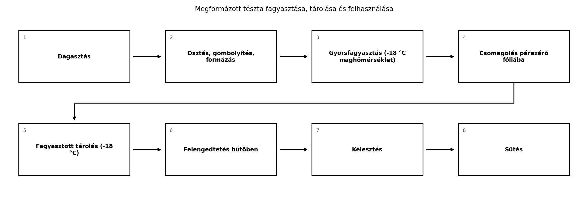

Egy pékségben nem mindig lehet hajnalban frissen dagasztani és azonnal feldolgozni minden tésztát. A fagyasztott, megformázott tészta lehetővé teszi, hogy a pék előre legyártsa a termékeket, lefagyassza, majd a szükséges napon kiengedje, megkelesszen és kisüsse. Ez különösen hasznos zsúfolt ünnepi időszakban, nagy rendeléseknél vagy akkor, ha a munkaerő-beosztást rugalmasabban kell megszervezni. A fagyasztott tészta minősége azonban csak akkor marad megfelelő, ha a fagyasztás, a tárolás és a felengedtetés paramétereit szakszerűen tartják be. Ha a tészta lassan fagy meg, vagy a tárolás során ingadozik a hőmérséklet, az élesztő és a sikérháló károsodik, a késztermék lapos, száraz vagy repedezett lesz.
A fagyasztott tészta útja egy pékségben a következő fő lépéseken halad végig:

Az ábra azt mutatja, hogy a fagyasztás nem a kelesztés után, hanem a formázás után következik, és a fagyasztott tésztát csak közvetlenül a sütés előtt kelesztik meg.
Definíció. Fagyasztott tészta (frozen dough) olyan, a sütőipari technológiában előállított, megformázott, de még meg nem keletett vagy részben keletett tészta, amelyet gyorsfagyasztással lehűtenek, fagyasztva tárolnak, majd később felengedtetés és kelesztés után sütnek ki.
Figyelem. A fagyasztás nem sterilizálás. A fagyasztás csak lelassítja a mikroorganizmusok működését, de az élesztőgombák és a spórás baktériumok egy része túléli. A fagyasztott tésztát ezért ugyanolyan higiéniai szabályokkal kell kezelni, mint a friss tésztát (lásd a Mikrobák gátlása és elpusztítása alfejezetet).
Szabály. Fagyasztásra elsősorban azok a tészták alkalmasak, amelyek erős sikérhálóval, mérsékelt víztartalommal és a fagyasztáshoz igazított élesztő- és adalékanyag-mennyiséggel készülnek. A nagyon lágy, magas tésztakitermelésű (TA) tészták fagyasztva gyakran szétesnek, mert a szabad víz nagyobb jégkristályokat képez.
A fagyasztás során az élesztősejtek egy része elpusztul, mert a jégkristályok a sejtmembránt roncsolják. Ezért a fagyasztott tészta receptúrájában az élesztő adagját általában megemelik. Tanulási példaként: ha egy friss tésztában 2 % élesztő van a lisztre vetítve, fagyasztott tésztához jellemzően 2,5–3 % élesztőt használhatnak, azaz a növelés 25–50 % lehet. A pontos értéket mindig üzemi próbával kell meghatározni.
Ugyanilyen fontos a sikér minősége és mennyisége. A fagyasztás közben képződő jégkristályok mechanikailag károsíthatják a sikérhálót, ezért a fagyasztott tésztához általában erősebb, nagyobb fehérjetartalmú lisztet választanak, vagy sütőjavító készítményt (pl. aszkorbinsavat, enzimeket) adnak hozzá. A tésztakitermelést (TA) is gyakran csökkentik: a kevesebb víz kisebb jégkristály-képződést és feszesebb tésztát eredményez. Például egy friss vizes tészta TA-ja 160 lehet (60% víz a lisztre), a fagyasztott változaté 156–158 (tanulási példa, ellenőrizendő: üzemi technológiai lap).
Megjegyzés. A fagyasztott tészták receptúrája mindig termék- és lisztspecifikus. A pontos értékeket a gyártmánylap, a lisztvizsgálati lap és a sütőipari próba alapján kell kialakítani.
Definíció. Gyorsfagyasztás olyan hűtési eljárás, amely a termék hőmérsékletét minél rövidebb idő alatt, jellemzően –18 °C maghőmérsékletre csökkenti. A gyorsfagyasztás lényege, hogy a termék rövid idő alatt haladjon át a maximális jégkristály-képződési zónán (jellemzően –1 °C és –5 °C között, tanulási példa), így a jégkristályok kicsik maradnak, és kevésbé roncsolják a sikérhálót és az élesztősejteket.
Szabály. A lassú fagyasztás nagy jégkristályokat hoz létre, ezért a megformázott tészta minősége romlik. A tésztát tehát a formázás után a lehető leghamarabb be kell tenni a gyorsfagyasztóba, és kerülni kell a félmeleg, huzatos helyen való pihentetést.
A fagyasztott tészta maghőmérsékletét a gyorsfagyasztás végén ellenőrizni kell. Tanulási példa: a megformázott tészta maghőmérséklete a gyorsfagyasztóban 30–60 perc alatt érje el a –18 °C-ot (ellenőrizendő: a gyorsfagyasztó gyártói adatlapja és az üzemi technológiai lap).
A fagyasztott tésztát csak a gyorsfagyasztás után, fagyasztott állapotban csomagoljuk. A csomagolóanyagnak párazárónak kell lennie, hogy megelőzze a fagyási égést (kiszáradást) és a tészta felületének bőrösödését. A csomagoláson fel kell tüntetni legalább a termék megnevezését, a gyártási időt, a fagyasztási időt, a tárolási hőmérsékletet és a minőségmegőrzési időt.
Allergén. A fagyasztott tészta csomagolásán az 1169/2011/EU rendelet szerint fel kell tüntetni minden allergén összetevőt, például a búzalisztből származó glutént, valamint a tojást, tejet, szezámot, ha a receptúra tartalmazza. A csomagolás során figyeljünk arra, hogy az allergénmentes termékek csomagolása elkülönítve történjen, mert a liszt- és porraszennyeződés keresztszennyeződést okozhat.
Előírás. A gyorsfagyasztott élelmiszerek fogalmát és legalább –18 °C-os tárolási/szállítási hőmérsékletét külön uniós irányelv (89/108/EGK) és annak hazai átültetése szabályozza; a hideglánc általános követelménye a 852/2004/EK rendeletben van. A sütőipari gyakorlatban a fagyasztott tészta tárolási hőmérséklete jellemzően –18 °C vagy alacsonyabb. (ellenőrizendő: a hatályos hazai rendelet, a pékség HACCP-terve és a hatósági útmutató pontos határértéke)
A tárolási hőmérséklet ingadozása különösen káros, mert a tészta felületén megolvadt, majd visszafagyott jégkristályok nagyobb roncsolást okoznak. A fagyasztóban a hőmérsékletet folyamatosan rögzíteni kell; a naplózott értékeket a HACCP-dokumentáció részeként megőrizzük.
A fagyasztott tésztát nem szabad közvetlenül meleg kelesztőbe tenni, mert a külső réteg gyorsan felenged, míg a belső réteg még fagyos; ebből egyenetlen kelés és héjrepedés lesz. A szakszerű felengedtetés lassú, szabályozott folyamat.
Gyakorlat. A felengedtetés tipikus lépései:
Figyelem. A felengedtetés során ügyeljünk arra, hogy a tészta ne izzadjon, mert a lecsapódó nedvesség a felületen bőrképződést, a szakajtóban pedig ragadást okozhat. A felengedtetés ideje alatt a tésztát tartsuk lefedve, ha a levegő száraz.
A fagyasztott tészták leggyakoribb hibái három okra vezethetők vissza:
A fagyasztóban látott darabról az alábbi ábra segít dönteni: az 1. a hibátlan darab, a 2. a jégkristályos (ingadozó hőmérséklet), a 3. a fagyási égés fakó, bőrös foltjaival (nem párazáró vagy sérült csomagolás), a 4. a felengedés után szétfolyó, nem kelő darab (élesztőkárosodás). Az alsó sor a hibák fő okát, a csomagolást mutatja: 5 helyes, légmentesen zárt, címkézett csomag; 6 nyitott, levegős zacskó címke nélkül.
A jégkristályos vagy fagyégett tételt próbasütéssel ellenőrizd, mielőtt felhasználod; a címke (termék, fagyasztás dátuma, tétel) a nyomon követés feltétele (ellenőrizendő: a kötelező címkeadatok a pékség HACCP-tervében és nyomonkövetési eljárásában). A HTML-kiadásban az egyes darabokra kattintva a hiba oka és a teendő jelenik meg.
Hibakeresési eset. Egy pékségben a fagyasztott kifli tészta felengedtetés után nem kelt meg rendesen, a kisütött kifli lapos és sűrű bélű lett. A pék ellenőrizte a fagyasztó hőmérsékleti naplóját, és azt látta, hogy az éjszakai órákban a hőmérséklet többször –12 °C-ig emelkedett, majd visszahűlt. Ez az ingadozás a jégkristályok növekedését és az élesztő károsodását okozta. A hiba oka tehát a tárolási hőmérséklet ingadozása volt. A pék a fagyasztó ajtajának tömítését kicseréltette, a hőmérséklet-riasztást beállította, és a tételt próbasütéssel ellenőrizte. A tanulság: a fagyasztott tészta minősége csak akkor garantálható, ha a hidegláncot folyamatosan fenntartjuk.
A fagyasztott tészta gyártása és felhasználása során az ellenőrzési pontok a hőmérséklethez és az időhöz kötődnek.
| Lépés | Veszély | Kritikus határ (tanulási példa) | Monitoring | Helyesbítés |
|---|---|---|---|---|
| Gyorsfagyasztás | mikrobaszaporodás a formázás és a fagyasztás közötti állásidő alatt; minőségromlás (lassú fagyasztás) | maghőmérséklet –18 °C elérése a megadott idő alatt | maghőmérő, időmérés | visszahűtés, tétel átfagyasztása |
| Fagyasztott tárolás | hőmérséklet-emelkedésből eredő romlás | tárolási hőmérséklet –18 °C vagy alacsonyabb | hőmérséklet-logger, napló | hűtőkamra javítása, tétel visszahűtése |
| Felengedtetés | kórokozó-szaporodás, egyenetlen felengedés | egyszerű tésztánál minőségi tartomány: hűtőkamra 4–8 °C; töltelékes terméknél hűtőtér 0–5 °C, a tészta maghőmérséklete legfeljebb 5 °C | hőmérő, időmérés | a kamra hűtésének helyreállítása, a tétel elkülönítése és értékelése (próbasütés); túllépés esetén a HACCP-terv szerinti döntés: felhasználás, átminősítés vagy selejtezés (ellenőrizendő: HACCP-terv) |
Egyszerű, töltelék nélküli tésztánál ezek főként minőségi ellenőrzési pontok; töltelékes (túró, tojás, hús) terméknél lehetnek élelmiszer-biztonsági CCP-k.
Higiénia. A fagyasztott tészta kezelésekor is be kell tartani a személyi higiéniai szabályokat: tiszta munkaruha, hajháló, ékszer nélkül, kézmosás. A fagyasztott tészta nem „védett” a szennyeződéstől, csak a mikroorganizmusok szaporodása lassult le.
Gépbiztonság. A gyorsfagyasztót és a hűtőkamrát csak betanítás után, felügyelettel szabad kezelni. A gyorsfagyasztó ajtaját ne nyissuk ki a fagyasztási ciklus közben, mert a meleg, párás levegő jégkristály-képződést okoz a tésztán és a berendezésben. A hűtőkamrában ügyeljünk a csúszós padlóra, és mindig legyen vésznyitó, hogy a dolgozó ne rekedhessen bent. A csomagológép hegesztőpofáját megfogni tilos, mert égési sérülést okoz.
Egy kis pékség hétvégi zsemle-rendelést kapott. A pékség csütörtökön dagasztotta a zsemle tésztáját, megformázta, gyorsfagyasztotta, majd fagyasztóban tárolta. Pénteken este (kb. 18 órakor) a fagyasztott tésztát a hűtőkamrába tette, 12 óra alatt felengedett; szombat hajnali 6 órakor kelesztőbe került, és reggelre kisült (tanulási példa). A zsemlék megkeltek, a sütés után a térfogatuk és a héjuk megfelelt a frissen gyártott zsemlének. A siker kulcsa az volt, hogy a receptúrában az élesztőt 2 %-ról 2,6 %-ra emelték, erős lisztet használtak, és a fagyasztást –35 °C-os gyorsfagyasztóban, a tárolást –18 °C-on végezték. Ezt az eredményt a Késleltetett és megszakított kelesztés alfejezetben a kelesztési idő tervezéséhez, a Sütőipari hűtés és fagyasztás alfejezetben a hideglánc ellenőrzéséhez visszük tovább.
Recept. A fagyasztott tészta előállításának ellenőrzőlistája:
A fagyasztott tészta minőségét a fagyasztás után és a felengedtetés után is ellenőrizni kell.
Önellenőrzés – válaszok
Feladatok megoldása
A megformázott tészta fagyasztása lehetővé teszi a termelés időbeli szétválasztását, de csak akkor eredményes, ha a fagyasztás, a tárolás és a felengedtetés paramétereit betartják. Fagyasztásra alkalmas tésztát erős sikérű lisztből, csökkentett tésztakitermeléssel és megnövelt élesztőadaggal készítünk. A gyorsfagyasztásnak rövid idő alatt kell elérnie a –18 °C maghőmérsékletet, így a jégkristályok kicsik maradnak. A csomagolás párazáró, a tárolás –18 °C-on folyamatos hőmérséklet-ellenőrzéssel történik. A felengedtetés hűtőben lassú, majd a tésztát kelesztőben kelesztjük meg. A fő hibák a jégkristály-károsodás, a fagyási égés és az élesztőkárosodás; mind a hőmérséklet-ingadozásra vagy a rossz csomagolásra vezethetők vissza. A fagyasztott tészta kezelése során a gyorsfagyasztás, a tárolás és a felengedtetés hőmérséklete egyszerű tésztánál főként minőségi ellenőrzési pont, töltelékes terméknél a HACCP-terv szerint CCP lehet. A fagyasztott tészta feldolgozásának időzítését a Késleltetett és megszakított kelesztés, a hideglánc és a hűtőberendezések működtetését a Sütőipari hűtés és fagyasztás, az osztási pontosság ellenőrzését pedig a Kenyértészta osztó- és csészeürítő gépek alfejezetben visszük tovább.